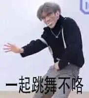

个人简介
姓名：蔡徐坤
国籍：中国
民族：汉族
出生日期:
1998年8月2日
出生日地：浙江省温州市
主要成就
2012年8月,蔡徐坤参演的偶像剧《童话二分之一》播出，他开始步入大众视线
2015年7月10日,参加中韩青春励志原创综艺节目《星动亚洲》,进入前三强
2018年1月,蔡徐坤参加竞演类综艺节目《偶像练习生》,并于同年4月6日以第一名的成绩正式出道
而现在依然被我们所喜欢，人们亲切的称呼这些人为小黑子
这些人见面都会说一句，哎哟你干嘛~

.jpg "小黑子食不食油饼")